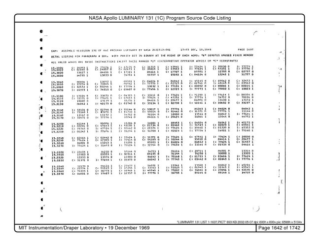
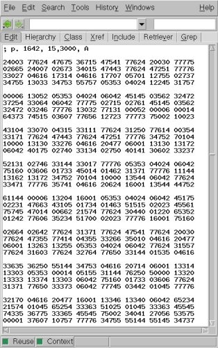
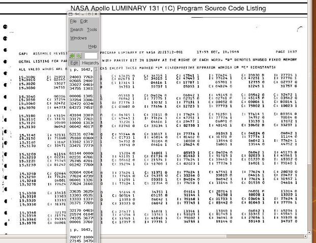

A Unique Time-Limited Opportunity to Help
Scan, Baby, Scan!
Most of this web-page covers things you can do to help in a very
general way, but it so happens that right now there is a
very specific way in which we'd like to get your help.
Right now, a very large (by our standards) set of very rare
AGC-related material has become available to us from the personal
keepsakes of Hugh Blair-Smith and Don Eyles, who were among the
original developers of the AGC. Some of you may recall Don
Eyles as the hero programmer of Apollo 14. That story has
been told and retold many places on the web, so I won't repeat it
here, but for example, there's a
Rolling Stone article about it.
To acquire this material and present it here online, however, it
must be scanned, and scanning costs money, and that's where we'd
like your help.
No, don't send us money, please! The materials will be
scanned by archive.org, and
anybody who is kind enough to help out will be billed directly by
archive.org after the scanning takes place.
What we are looking for, for each one of the documents we need to
scan, is a "sponsor" who will commit to paying for that
scanning. So what we'd like for you to do is to choose which
particular document you'd like to sponsor, from the list in the
next section, and to drop me an email (Ron Burkey
<info@sandroid.org>) with your name, physical address, and
telephone number. If two or more people want the same
document, the first email I receive wins it, so if you have a
second choice, include that in the email. I'll fill out the
paperwork for archive.org, and we'll keep you apprised of the
progress.
The amount you can expect to pay is $3 plus $0.25/page, so the
list in the next section includes page counts to help you figure
out the total. If you are not in the U.S., that is fine with
archive.org as long as your email address is valid.
The Document List
Here's the list of documents we are trying to acquire.
You'll notice that some of them already have sponsors, and indeed,
some of them have already been scanned. Don't choose one of
those. Incidentally, after the documents are scanned,
archive.org will continue to host them online at quite a high
resolution, and you can examine our Virtual
AGC "collection" of documents at archive.org to better
understand what you're helping to accomplish.
Document Name
|
Page Count
|
Description
|
Sponsor/Scan
|
AURORA 12
|
760
|
A very early version of the Lunar Module
software, prior to any flown missions. It is very
important for us, because it is the last version of
AGC software to contain the complete test suite that have
been developed to check out the CPU and other aspects of the
spacecraft. It is thus invaluable for validating the
correct behavior of AGC simulators.
|
Mike Stewart (already
scanned)
|
YUL
|
730
|
The source code for the original AGC
assembler program used in converting AGC software source
code into "rope memories" for use in the actual AGC.
|
Ron Burkey (already
scanned)
|
RETREAD 44
|
304
|
The earliest version of the Lunar Module
software, prior even to the AURORA 12 software mentioned
above.
|
Mike Higgins
|
SUNBURST 120
|
1284
|
The software for the unmanned Apollo 5
mission.
|
Mike Stewart (already
scanned)
|
SHEPATIN (SUNBURST 37)
|
1223
|
An earlier version of the SUNBURST 120
software mentioned above.
|
Needed!
|
LUMINARY 69
|
|
Lunar Module software for Apollo 10
|
Onno Hommes
|
1969 Digital Simulation of Apollo 11 landing
|
994
|
|
Matthew
Fite
|
1971 Digital Simulaton of Apollo 11 landing
|
759
|
|
Fabrizio Bernardini
|
LUMINARY 116
|
|
Lunar Module software for Apollo 12
|
Ron Burkey
|
LUMINARY 131
|
1735
|
Lunar Module software for Apollo 13.
This is, in principle, something we've already had for many
years, and is already online many places on the web,
including at this site. However, the version which has
been available these many years was digitally mutilated
by an OCR process and the original high-quality scans
discarded. Consequently, the available scans are
barely readable. This would be a new, clean,
unmutilated scan. A similar thing happened with the
Colossus 249 (Apollo 9 Command Module) scans that have been
available in mutilated form for many years: they were
eventually replaced by a clean, legible scan.
|
Needed! |
ZERLINA 56
|
1735
|
Don Eyles offers this explanation:
"ZERLINA was my personal non-flight testbed for developing
new capabilities, some of which later moved to the main line
LUMINARY. Its main feature was a new version of the Servicer
job in which the guidance period was allowed to stretch
beyond the nominal 2 seconds — part of the overall effort in
response to the CPU overload on 11. Variable Servicer would
have been necessary if new capability was required that
would have further reduced our CPU margin, such as something
called P66 LPD, also implemented in ZERLINA, based on an
idea of John Young's, that would have facilitated making
very accurate landings. This capability is described in
Draper Lab report E-2581, which I can at some point make
available. Neither Variable Servicer nor P66 LPD was ever
approved for LUMINARY. Things developed first in ZERLINA
that DID make the jump to LUMINARY included the a priori
terrain model (needed to land in more mountainous terrain),
and also a new version of the "landing analog displays," the
same mentioned in the Tindallgram of July 24, 1970. In my
view ZERLINA 56 still represents the state of the art for
manned landings on the Moon." Paul Fjeld has also told
me, although Don doesn't mention it, that John Young also
worked with this in the LM simulator.
|
Needed! |
Digital Simulation of ZERLINA lunar landing
|
395
|
A simulation of ZERLINA would be particularly
interesting, because since ZERLINA was intended to improve
the landing process, the simulation is what would show
whether or not that was true!
|
Needed! |
LUMINARY 210
|
|
Lunar Module software for Apollo 15-17.
|
Jim Lawton
|
Digital Simulation of Apollo 17 landing
|
628
|
|
Fabrizio Bernardini
|
Digital Simulation of Apollo 12 landing
|
805
|
|
Matthew Fite
|
There are additional, smaller documents which need to be scanned,
but they have not yet been cataloged. There are also other
possible sources on the horizon, which may or may not materialize
within the time-frame of this special offer.
In case you wonder what a "digital simulation" is, we did too, so
Don Eyles has also given us a pretty detailed description:
"I'm not sure why I saved all these simulations. These
days I guess their chief value would be to anyone actually
trying to run a simulation of an Apollo descent.
"They consist of two parts, the sim itself, and an "edit" of
raw data dumped during the sim onto a MARSROT tape. The sim
part consists of some pages of initialization data, then the
run itself. The printout includes astronaut inputs, DSKY
displays, lines called "clocks" that are printed when the code
passes through certain locations, and for every two seconds of
simulated time a three-line summary of data from the
simulation environment including the current position,
velocity, attitude, etc., etc. The edit portion includes
additional sim and AGC data, also printed at two-second
intervals. I'll attach photos of the sim and edit parts of the
APOLLO 11 LANDING run."
What's In It For Me?
Well, you'll have the satisfaction of knowing that you did a good
thing, and your name will be permanently enshrined as a sponsor
(assuming you want it to be so enshrined) both at this website,
and in our archive.org collection!
Not enough for you? Well, to express my thanks, if you
sponsor the scanning of one of these documents, I'll personally
buy you a thank-you gift, as follows:
- Sponsor a document of 100 or more pages: you get an
Apollo coffee mug.
- Sponsor a document of 500 or more pages: you get an
Apollo ball cap.
- Sponsor a document of 1000 or more pages: you get an
Apollo tee shirt.
And so as to be fair, if you sponsor multiple smaller documents,
you can add the pages counts together to go to the next higher
gift category, if you like. Or if you offered to sponsor a
larger document and it had become unavailable so that you had to
accept your second choice, which was smaller, it was your original
good intention that determines your gift category. Of
course, you can optionally choose a lower gift category, or no
gift at all (that works for me!).
After the scans are complete, and you've paid archive.org, I'll
get you the exact details and get your choices (style, size,
color, etc.), but you'll have a choice of some reasonable
variation of the following:
I Don't Want to Pay, But I Still Want to Help!
Well, as you may be aware, what we do with AGC software
that comes to us in the form of program listings or scanned
program listings is to
- Transcribe the source code into the form of files which can be
"assembled" to create an executable memory "rope".
- Provide the source-code files and the "rope" to the public, so
that the program can be run in an AGC simulator.
If you would like to help with the transcription process, we are
currently transcribing AURORA 12, and will of course
proceed to the others in due course. You
should start by reading the explanation at this link.
Okay, so that's the end of the special offer. If you want
to continue reading the general description of what we need, then
by all means proceed to the next section!
Useful Areas of Involvement in General
This is not an exclusive list, I suppose. If you have a notion
that doesn't fall into any of these categories, you can contact me
directly.
Information
First and foremost, Virtual AGC is about providing AGC/AGS related
documentation that cannot (or at least, previously could not) be
found elsewhere online. Examples of items that will always be
in demand are these:
- Legible scans or page-by-page digital photographs of assembly listings for any
Apollo software versions not already on this site. These
do not have to be listings from actual missions, and could be
intermediate versions. By an "assembly listing", I mean a
printout showing assembly-language source code and the binary to
which that source code reduces upon assembly.
- Scans of any original Apollo documents not already available here at Virtual AGC or elsewhere.
Of particular value would be software patches applied at
runtime, software problems reports, mission checklists, and
detailed technical documentation of hardware interfaced to the
AGC. Click here for hints of
where to find such documentation.
- Or even information
about where such material resides, such as "Museum XYZ has a
listing of Luminary 1D".
If you have such material, you'll probably want to contact me
directly to determine that we don't already have that item in
process, to discuss methods of preparation, to discuss means of
delivery to me, etc. A pretty complete description of all the
available options is available on our "how
to digitize" page, so you'll probably want to at least skim
that page. When you contact me, a page or two of scanned
images (including the title page) attached to the email might be
useful.
Wiki
If you have AGC/AGS information other than original Apollo documents
you'd like to make publicly available, you could do so by contacting
me directly. But in some cases you may find a better and more
straightforward approach may be to contribute
your knowledge to the wiki. Examples of things that are
useful are theoretical discussions, historical information or
anecdotes, tutorials on how to perform certain tasks with the AGC or
AGS, etc.
Coding
If you have a simple bug-fix, it might be easiest to submit a patch
directly to me. Please be sure to tell me when you do so which
development snapshot or which subversion revision you started from.
For more extensive coding, we have a code repository
at GitHub and if you have ideas for new features then you can
contribute them to the project via the repository.
Some particular sore spots which could be addressed by an ambitious
coder include:
- Fixing the yaAGS
program so that it can interpret downlink telemetry streams
emitted from the yaAGC
program in order to update LM state vectors.
- Fixing yaAGS so that
its downlink telemetry streams work.
- Fixing yaTelemetry
(or providing a supplemental program) to display yaAGS downlink telemetry.
- Adding an IMU simulation program.
- Adding an FDAI simulation program.
- Adding an AOT simulation program.
- Working out the details of using the hand-controller
simulations (yaACA, yaACA2, yaACA3) and/or IMU in the
Command Module.
- Adding simulated peripheral devices for the AGS.
- Addition of more control-panel visual realism. (For
example, control panels that look like control panels, with
switches that look like switches, in proper locations, rather
switches that look like GUI push-button widgets, located
wherever is convenient.)
- Integrating Virtual AGC into an existing open-source
spacecraft simulator program.
While the excellent LM-Simulator
contributed program by Stephan Hotto already provides a simulated
IMU and FDAI, it has a couple of drawbacks in that it is written in
the Tcl/Tk interpreted
language, and that it is closely tailored to the LM (making it only
of limited value for the CM). The fact that it is in Tcl/Tk makes it relatively slow,
and almost unusable on slower computers. Of course, as time
goes on and computers become faster and faster, this becomes less of
a concern. The unusability with the CM will remain a
concern. One possibility is to simply update LM-Simulator itself.
Another is to convert it to C/C++. Still another is to replace
it with IMU/FDAI workalikes. Any such effort, other than the
latter, would preferably be coordinated with Stephan rather than
being done unilaterally without his knowledge.
More generally, while we will likely accept any useful code that is
supplied, you should keep the following suggested guidelines in
mind:
- All programs are cross-platform, with the minimum acceptable
list of supported platforms being Linux, Windows XP, and Mac OS
X 10.4 (and later).
- Only open-source development tools are used.
- Non-GUI programs are preferentially written in C.
- GUI programs are preferentially created using the wxWidgets toolkit, in the C++ language.
- The compilers used are gcc
and g++ (or MinGW
in Windows).
- The code-formatting style used is the GNU
style. This doesn't necessarily mean you have to
change all of your coding habits, as there is a handy program
called indent readily
available on most Linux systems and Mac OS X that will reformat
C/C++ source files into this style. It is also available
for
Windows.
- Primary code development is done in Linux, which means that
UNIX-style line endings ("\n") are used in preference to Windows
line endings ("\r\n") or Mac endings ("\r"). While this is
not a problem for gcc,
it may be a problem for your source-code editing software.
- You retain the copyright for the code you write, but you are
expected to license it under the terms of the GNU GPL version
2. The license text within the source files should quote
the license as "GPL version 2 or later".
It should be noted that making choices other than these is likely to
make inclusion of your code into Virtual AGC binary installer
packages impractical, and that such omission is likely to greatly
reduce the number of people actually using your code.
For a more-technical view of the operation of Virtual AGC code and
what it might take to supply code, please visit the developer page.
Cash
Virtual AGC is a non-commercial project in the public interest and
does not accept monetary donations in general, and has no mechanism
for doing so. If you are keen on doing so, I suppose you can
contact us directly, although nobody ever has done so.
Code Conversion or Proofing
This is an area where no technical expertise is required for
participation, particularly in proofing.
A situation arises from time-to-time in which AGC assembly-listings
have been received and require conversion to machine-readable form
for integration into Virtual AGC. Such conversion tasks are
quite dreary and time-consuming, and therefore are very wearying
when done by a single individual. On the other hand, there is
a certain pleasure involved in participating in such a conversion,
because you can know that you are helping to make available for
actual use code which has not seen the light of day for 40
years. So volunteer assistance is welcomed in these cases.
Code
conversion from page images to source-code files
The
following AGC assembly listings are awaiting
conversion:
- Apollo 13
Lunar Module (Luminary 131)
- Apollo
9 Command Module (Colossus 249)
- Apollo
11 Command Module (Comanche 55)
- Apollo
11 Lunar Module (Luminary 99)
Apollo 6 Command Module (Solarium 55)Apollo 15-17 Command Module (Artemis 72)Apollo 8 Command Module (Colossus 237)
|
Hey, the list is empty, so you'll just have to wait until we have
some more stuff in the hopper!
Code conversion is a process wherein we take the scanned or
photographed images of a hardcopy listing of an AGC program,
and convert it to source code (text files) that can be processed to
created the executable software which runs on the simulated AGC
CPU. It is not necessary to understand AGC assembly language,
or any computer language, to do this; but if you are somewhat
familiar already with the AGC programs, you will be awarded with
some small thrills along the way.
Here is a basic outline of the conversion process:
- Contact me to receive an assignment. The AGC source code
is divided into a sequence of well-defined modules, with names
such as INTERPRETER or IMU MODE SWITCHING ROUTINES, and you'll
be given a list of one or more modules to convert.
- The AGC code does not change much from mission to mission, or
from spacecraft to spacecraft. (For example, the software
for Apollo 11 is likely to be similar to the software for Apollo
13, and the software for the CM is likely to be similar in many
respects to the software for the LM.) Therefore, the
appropriate conversion technique is to start from existing source code from a
different mission or spacecraft, and then to simply make
whatever changes are needed. You will therefore first need
to obtain that existing source code by installing Virtual AGC on
your computer via the appropriate binary installer program, or
from the development snapshot, or from the subversion repository.
I'll instruct you as to the likeliest close mission/spacecraft
matches in the instructions I send you.
- Download
or examine online the appropriate scans of the assembly
listings being converted. (I'd recommend looking at
them online on an as-needed basis, but you're free to do it
however you like.)
- Copy the appropriate starting source-code files into a new,
clean folder, retaining the names of the files unchanged.
- Edit the file header to provide correct information (such as
mission number, module name, your name, the date, etc.).
(See picture below.) In the instructions I send you, I
will give you a template file-header that can be used. Note: Source code is
7-bit ASCII only! If you use a Unicode-enabled editor, you
will produce something that looks fine, but which will be a big
mess for me to use, since I will have to seek out and destroy
all of the Unicode characters you had added.
- Compare the source file line-by-line against the scanned file,
making changes where necessary. Note certain differences
between the scans and the textual source-code files (referring
to the picture below):
- In the scans, "comments" begin with a special character such
as 'R' or 'P' in the first column, or simply appear on the
right-hand side of the page, following the actual code without
any special marking to distinguish them. In the Virtual
AGC source-code files, however, they should be preceded by the
'#' character.
- In the scans, each line begins with several columns that are
not part of the source-code itself and are instead produced by
the action of converting the source code to binary executable
code. These columns are omitted in the source-code files being
created.
- Each line of source code begins with an optional location
label of up to 8 characters in length, followed by an optional
machine-language "opcode", followed by one or two optional
parameters, followed by optional "comments". In the
source-code files being created, we prefer to have tab-stops
that are 8-spaces wide, and for the optional label to begin at
the left-hand margin, the opcode to begin at the 2nd tab stop
(i.e., 16 spaces in), and for each of the other fields to
begin at the next succeeding tab stop. It doesn't really
matter where comments are aligned, except that it's nice if
they all line up at the same tab stop within any given file.
- Each time you move from one scanned page to the next, put in
a comment giving the page number (from the upper right-hand
corner of the scan), such as "# Page 292". This helps
you or other people when finding or fixing errors.
- We use all upper-case text for the labels, source-code, and
AGC program comments, to duplicate the whole AGC developer
"experience". Comments you add to the code yourself
should be lower-case or mixed upper/lower case to distinguish
them, and you might want to mark them with the date or
something so that we know they weren't part of the original
code. You should add comments for any unusual condition,
such as missing or garbled code.
- Presumably because of limitations of the character sets
originally used, you may find that the assembly listings have
used some character substitutions like "-" for
apostrophes. Wisely or unwisely, I chose to reverse
these substitutions. I'd suggest that for consistency
you continue the trend.
- When to raise your hand and
ask for help:
- Tell me if you can't read some code or program
comments. (Though note that zooming in or zooming out
may help.) I may have higher-resolution images which
can be consulted than those posted online.
- Tell me if you encounter pages which are cropped so badly
or with such poor contrast or brightness that you think they
are unacceptable. Again, I may have better images
available.
- Tell me, but do not panic, if you find small sections of
code which are missing or garbled, as this is almost always
a situation for which workarounds exist.
- If you think you have detected errors in the source-code
files you started
from, let me know (with some precision, please) what the
error was and where it was located. This is a great
opportunity to fix errors—in program comments,
naturally—that may have been lurking unnoticed for
years. Common errors are replacing 'O' with 'C', 'O'
with 'D', 'O' with '0', 'F' with 'E' or 'P', 'P' with 'R',
'2' with 'Z', and so forth.
- Email the new source files you've created directly to
me. If you have been assigned several, email them to me as
you finish them.
In the following pictures, some of the points mentioned in items #5
and #6 above are illustrated using the first page of the SERVICER
module of AGC program Luminary 131. (It is perhaps worth
pointing out that according to the scan, this is page 852, while
according to the converted source-code file it is page 857.
This is because the Luminary 131 page images were originally
supplied as a PDF file in which the page numbering within the PDF
file did not exactly match the markings on the pages
themselves. I hope to avoid this kind of discrepancy in future
conversions.)

Before
|

After
|
Finally, I'd offer the following counter-intuitive
observation: Make every effort to eliminate error, but take
comfort in the fact that I have means of detecting and correcting
programming errors, and thus you don't need to worry too much about
them. However, there is no method other than proof-reading to
detect errors in program comments, so please take special care with
those. In
other words, it is more important that you get program comments
right than that you get the program code itself right.
Proofing of octal
listings
The
following AGC octal listings are awaiting
proofing:
- Apollo 13
Lunar Module (Luminary 131)
- Apollo
8 Command Module (Colossus 249)
Apollo 11 Command Module (Comanche 55)
Apollo 11 Lunar Module (Luminary 99)
|
Background
In addition to converting source code and comments from AGC program
listings into source-code files, it is necessary for quality-control
purposes to convert the executable code (which appears in the page
images as 144 pages of octal numbers near the end of the page
images) into a machine-readable text file as well. The
accuracy of this conversion is extremely important. You see,
the AGC source code is debugged only to the point at which the
executable code that can be created from it matches the "octal
listing" from these 144 pages ... so the AGC source code conversion
can only be as good as the octal listing conversion. If the
octal listing has conversion errors in it, then the source code is
assured to have conversion errors as well.
The "octal listing" files so created are given names such as
Luminary131.binsource or Colossus249.binsource, and are provided in
a Virtual AGC download along with the AGC source-code files.
These days, it is no longer necessary to manually create these
files, so no volunteer help is needed for binsource creation.
However, regardless of the method used to create the binsource
files, the files are just as prone to error as the source files, and
therefore just as in need of volunteer assistance for
proofing.
Those who are attuned to issues of this kind will recognize that the
danger here is not error
as such, but rather the possibility that errors in binsource and
source may match.
Therefore, one may naturally wonder how likely it is that the
binsource file and the source-code files will just happen to have
identical errors at corresponding memory locations? In other
words, is there really much chance of there being undetected
errors? The answer is that it depends on the method to create
the binsource files. Under the present time-saving methods
being used, it is very likely that errors will coincide, and therefore
it is very important for proofing to be done. Another logical
question is this: given that each memory bank—each 4-page block of
the 144 pages—has an associated checksum, how likely is it that a
bank with a correct checksum will still have undetected errors in
it? The answer is that it is not likely for any given memory
bank, but that in the past several cases have been encountered where
banks with correct checksums have been found to have two or even
three undetected errors in them that canceled out when the checksum
was created. In other words, the bank checksums can make us
feel better about the odds the conversion has been accurate, but
only up to a certain point. So again, the quality of the code
conversion can only be insured by having very good proofing of the
octal listings in the binsource files.
Procedure
Here are the procedures for helping out with the proofing of an
octal listing:
- You don't really need an assignment from me—in other words,
you can simply start proofing something without consulting with
me—but it may be helpful if you send me a list of binsource
files and page ranges you'd like to work on so that I can warn
other people to work on different page ranges.
- On a page by page basis, compare a memory page from the AGC
page images to a corresponding page in a binsource
file. The binsource files are provided in the same folders
as AGC source code when you download or install Virtual AGC.
- You do not need to edit the binsource files. Rather, you
merely need to take notes of what you're doing.
- For each page you complete proofing, inform me of the
following. (See the explanations following this procedure
to understand what some of the things being asked for are.)
- The binsource file being proofed (Luminary131.binsource,
Comanche055.binsource, etc.)
- The page number that was proofed.
- The number of errors found on that page, even if it is
zero.
- The memory locations of those errors.
- The proofing method used.
The data being compared
Below, you see examples of corresponding areas of the octal listing
from an AGC page image and a binsource file (click to enlarge
either:

Page image, Luminary 131
p. 1642
|

Binsource, Luminary
131 p. 1642
|
As you can see, the page image has various things in it that are
simply ignored in the binsource file. For one, there is header
info at the top of the page which is all discarded except that the
binsource file has a comment giving the page number. (In
binsource files, comments are prefixed with a semi-colon.)
Each line in the page image is prefixed with a column that gives the
memory address of the data, and this column is not put into the
binsource file. Instead, the address from the first line on
the page is placed in the page-number comment. You'll also
notice notations like "C:" or "I:" interspersed throughout the data,
and that these are discarded. (They indicate that the memory
address is a Constant or Interpretive data, and were in the original
program listing only for informational purposes anyway.)
Finally, note that the contents of each memory location is a 5-digit
octal number, but that in the page image it is a 5-digit octal
number followed by a single digit of 0 or 1. This extra number
is a parity bit, and is of
no value to us so we ignore it.
Conversely, the binsource file has a couple of things in it that the
page image does not. One thing that you cannot see in the
example is that at the beginning of each 4-page block we place a
notation that reads "BANK=n",
where n is the memory-bank
number. In our example, this would have been on Page 1640, and
would have been an extra line reading "BANK=15". One thing you
can see in the screenshot above, however, is the notation ", A" in
the page-number comment. We'll discuss this a little later.
As far as the methods for comparing the page image with the
binsource file are concerned, I think that many people's first
inclination—mine included!—is to print out one or the other and put
them side by side. I'd offer the observation that this method
is essentially useless, and you will very likely give up after
trying a page or two. I have hit upon a couple of methods that
seem far superior to me in the sense that they are far less
exhausting and detect many more errors than the side-by-side
comparison method.
Audio/visual proofing
If your computer is equipped with text-to-speech capability, you can
do the following:
- View the appropriate page image on the screen.
- Use text-to-speech to cause the computer to speak aloud the
corresponding page from the binsource file.
- Follow the page image with your eyes while the computer
speaks.
This method is the least-tiring method as far as I'm
concerned. It produces the least eyestrain, and allows you to
view the page images at any size you like. However, it has the
drawback that most text-to-speech systems will try to pronounce
something like 12345 as "twelve thousand three hundred forty five"
and something like 00006 as "six", which can cause the playback
speed to vary greatly from number to number, and takes a while to
become familiar with.
Visual proofing
In this method, you view the page image and the corresponding page
from the binsource file at the same time, but you perform some
tricks to make the comparison easy. What you do is to:
- Adjust the zoom of the page image so that the vertical spacing
of the text rows is exactly the same as the row spacing of the
binsource file in a text editor program. (This is
super-easy if you view the page image online with the Mozilla
Firefox browser. All you have to do is to adjust the
Firefox window size.)
- You make the text-editor window in which you're viewing the
binsource file really narrow so that only a single 5-digit
column (or perhaps a little more) is visible.
- You drag the text editor so that the columns being compared
are side-by-side.
For example (click to enlarge):

On newer sets of AGC page images, in which superior digitizing
techniques are used, the ease of use of this method is even more
striking.
Proof markings
Every time a given memory page is proofed an extra field like one of
the following is added to the page-number comment:
- "V" means that the page was visually proofed and that no
errors were found.
- "V(n)" means that the
page was visually proofed and that n errors were found.
- "A" and "A(n)" are
the same, except that the proofing was an audio/visual proofing
rather than a visual proofing.
- "FV", "FV(n)", "FA",
and "FA(n)" are the
same except that it indicates a "final" proofing done after the
bank checksum is already correct and thus when we're not really
expecting to find any errors.
I actually add these notations myself, so you don't have to worry
about them other than as guides to which memory pages are worth
proofing. A page with a notation like "V(15), V(5), A(1), V,
FV", for example, has already been proofed 5 time, including a final
proofing, and the last two passes haven't found any errors ... so
there's not an urgent need to proof it again. On the other
hand, a page with no
proofing marks, or with a mark like "V(15)" is in urgent need of
more proofing.
Perhaps you will invent some wacky new method of proofing that works
even better. If so, let me know about it and we'll invent a
new notation for it.
Proofing of
comments in source-code files
The
following AGC assembly listings can profit by having
comments proofed:
- Apollo 13 Lunar Module (Luminary 131)
- Apollo 8 Command Module (Colossus 249)
- Apollo 11 Command Module (Comanche 55)
- Apollo 11 Lunar Module (Luminary 99)
|
After the code-conversion activities described in the preceding
sections, we have a reasonable assurance that the program code is
100% correct—i.e., that the AGC program will execute properly unless
there is a bug in the AGC CPU simulator itself. However, we
also have good reason to believe from past experience that the
program comments still have many errors. Normally, computer
programmers treat program comments as an afterthought, and don't
worry too much about them as long as the code itself is
correct. But when trying to understand very old code such as
the AGC programs, the program comments are very important.
Normal Procedure
If you want to help in proofing comments in existing source files,
here are the instructions for doing so, assuming you have already
installed Virtual AGC on your computer and therefore have all of the
existing AGC source code available to you:
- You don't need any special assignment from me. I have no
better idea as to where there may be bugs in program comments
than you; they could be anywhere, in any source file; nor is
there any team working on this problem in a fashion that needs
coordination. However, the more times that a source file
has been proofed, the less likely that you'll find errors in
it. So simply choose an AGC source file whose modification
history (in the header of the file) doesn't indicate that it has
already had its comments proofed, or has been proofed less than
other source files.
- Download
or examine online the assembly listing for the same AGC
spacecraft/mission/version. (I'd recommend looking at it
online, but you're free to do it however you like.)
- Edit the file header "mod history" to show that you are
comment-proofing the file. (See the pictures in the
code-conversion section above.) Note: Source code is 7-bit ASCII
only! If you use a Unicode-enabled editor, you will
produce something that looks fine, but which will be a big mess
for me to use, since I will have to seek out and destroy all of
the Unicode characters you have inadvertantly added. This
has proven to be a particular problem when people use
Macs. If you are using a Mac and you are not certain
that you can completely disable Unicode editing, it is perhaps
best if you don't participate in this particular activity.
- Compare the source file line-by-line against the scanned file,
making changes where necessary. Step #6 in the
"code-conversion" section above gives a lot of hints as to how
to do this effectively.
- Important note:
If you find a comments which needs to be corrected, it is very
likely that the same mistake exists in source-code files for
other spacecraft or other missions. For example, suppose
you are working on proofing INTERPRETER.s for Luminary131.
There is also an INTERPRETER.s for Luminary099, Colossus249,
Comanche055, etc. So if you correct all of these files,
then you are multiplying the
effectiveness of the proofing you are doing. But
remember that the comments may actually have changed in the page images, so
you can't blindly assume that a fix is necessarily applicable to
a different AGC version unless you examine the page images for
that AGC version as well.
- Email the new source files you've created directly to me.
Advanced Technique
If you have the appropriate software to do so, there is a quick
technique by which comment fixes that have been made in the past for
one type of spacecraft or mission can be ported to the source code
for other spacecraft or missions. This is so because of the
way the source-code files have been created. We started with
the source code for one mission, then modified it (via the "code
conversion" technique described earlier) for another mission, then
modified those files for still other missions. Each time the
code was modified, some comment-fixes may have been made, but
probably were not back-ported to earlier source-code files. So
if we compare the
corresponding source code for different missions, we can easily
pinpoint where some corrections can be made. While this
doesn't find all of the broken comments, it can help to find a lot
of them with reduced effort by leveraging work that others have
already done.
In terms of the way we have created the source files—as opposed to
the software evolution of the original Apollo Program's AGC
development—the ancestry of the source files is as follows:
Luminary131 → Colossus249 →
Comanche055
Luminary131 → Luminary099
So we would expect to see more comment fixes in Comanche055
(relative to Luminary131) than we would in Colossus249.
Fortunately, there are automated techniques for locating such
differences, but you need the appropriate software to do so.
On Linux, I use a (free) tool called kompare for this, but there
are
any number of such tools for different computer platforms that
may be suitable. Similar programs which can be had for free on
Windows and Mac OS X are WinMerge
and FileMerge,
respectively. I'll simply illustrate
the technique using kompare.
If I run kompare on Luminary099/INTERPRETER.s and
Luminary131/INTERPRETER.s (as of 2009-06-20), an excerpt of the
comparison is seen below. (Click to enlarge if it's hard to
read.)
A number of differences are immediately apparent:
- At lines 189 and 193 (using the numbers from the left-hand
pane), we see page number differences. These are perfectly
appropropriate since the code does appear on different pages in
these two versions of the AGC code.
- At lines 182, 220, and 224, we see some code (rather than
comment) differences, but actually, this is a case in which the
change might be profitably ported over from one file to the
other. The difference is that a space has been changed to
a tab, and while this difference is unimportant to the software
that processes the source code, the use of the tab instead of
the space means that the fields line up better according to the
preferred code-formatting described in step #6 of the "code
conversion" section above.
- Finally, at line 195 we seen actual fix to a program comment,
namely that the word "ARTGHMETIC" has been corrected to
"ARITHMETIC".
Source-Code Annotation
For those who are interested in providing help that requires a much
greater involvement in understanding the technical aspects of
AGC/AGS source code, such as the Luminary
program, there is an interest in having an on-going program of
providing modern annotations to the AGC/AGS source code. Such
modern annotations can provide assistance to others examining the
code, and can therefore be viewed as an educational service.
Annotating the source code can help the student in several ways:
- It can provide entertaining background information. For
example, in the source code which produces 1201/1202 alarms,
background information about the 1201/1202 alarms during the
Apollo 11 landing can be added.
- It can supplement the sometimes sketchy program comments
provided by the original developers. They say that you
never really understand a subject until you can teach it to
others. Well, here's your chance!
- It can list or hyperlink helpful relevant resource
materials. For example, INTERPRETER.s could have a
hyperlink to the manuals describing AGC interpreter language.
- It can give information about the developers themselves, which
is almost entirely lacking in the original source code.
At present (20090703), this effort has barely begun. To get an
idea of what some annotations might look like, you can look at the Apollo
11
LM PINBALL program.
In order to provide such annotations, it is necessary to understand
the markup language and strategy being used, which is described here.
There is presently not total agreement as to the best method of
managing the annotation efforts. For now, if you wish to
participate, I'd suggest that you decide which source file(s) you'd
like to work on, chosen from among the programs Luminary 99,
Comanche 55, or Flight Program 6. Then contact me so that I
know you're working on it. Make changes directly in the source
files and send them to me.
Last modified by Ronald Burkey on
2016-11-21.


{kind=link}
{kind=link}
{kind=link}